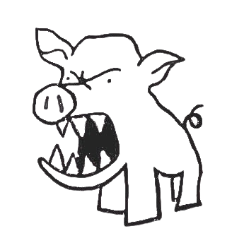

불온한 상상력, 2006년부터.
소개 | 아카이브 | 사람 | 텍스트 | 블로그 | 인스타그램 | X
2026.10 〈프라우드 메리〉 정성경 작, 윤한솔 연출. 대학로예술극장 소극장, 10.31–11.8
2026.7 〈진노 震怒〉 전성현 글쓰기, 윤한솔 연출. 예술공간 혜화, 7.25–8.2
2026.1 〈바보런하기-타오르는 어둠 속에서〉 연극 안 하기, 바보런하기. 상상만발극장 연습실, 1.24
greenpig.kr@gmail.com
최종 수정 2026.11.9